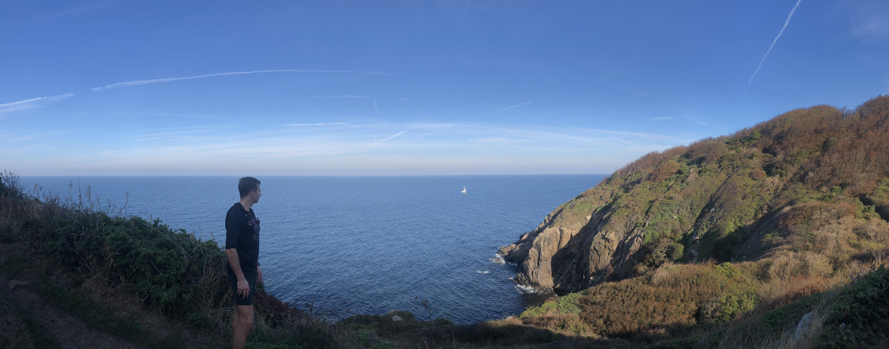

Sidste år fik Lasse og jeg den geniale idé at løbe Bornholm rundt sammen. Det blev til seks etaper langs Bornholms kyst og ca. 110K under sålerne.

Første etape (25,5K, 16. oktober 2018): Start på eventyret rundt om øen. Fladt indtil Hasle, derefter godt kuperet.
Anden etape (15K, 17. april 2019): Klipper, sand og rullesten. Det går ikke hurtigt.
Tredje etape 16K, 24. juli 2019): Op ad bakke ned ad bakke. Tyngdekraften er i mod mig...
Fjerde etape (16K, 1. august 2019): Klipper indtil Nexø, derefter fladt og strand ved Balka.
Femte etape (13K, 14. september 2019): Vind og sand men gode ben. Kunne godt have løbet længere her.
Sjette etape (23K, 15. september 2019): Hård modvind, trætte stænger og mindre asfalt end frygtet. De sidste kilometer var lange.